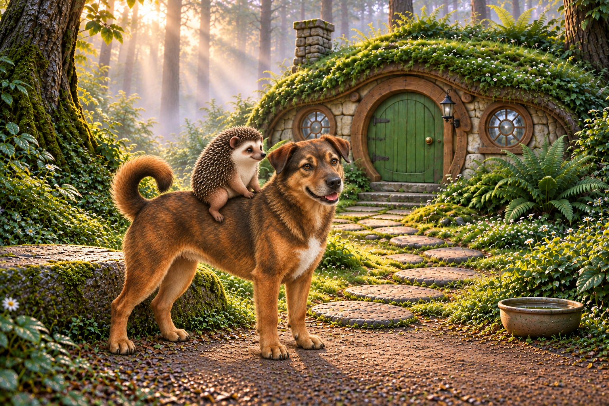
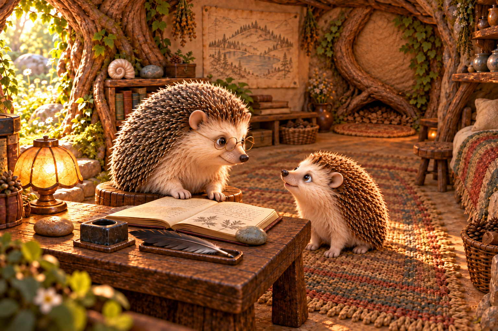

Elder chapter · visual review · existing images
Papa & Scooby beside the established style
Left: the new arrival. Right: PinPin and the Elder in the study. Both are existing chapter images; this is a comparison, not a proposed repaint.
02 · Papa arrives on Scooby
New revision04 illustration · scene-002-v1. Click to inspect the original.91 · PinPin speaks with the Elder
Established revision03 artwork · home-51-v1. The earlier revision02 characters and rendering were preserved during a background repair.The faces, enlarged
These are viewport details of the original files, without retouching. Different characters and lighting are not a controlled experiment; compare the treatment of eyes, facial shapes and fur.
Papa · scene2 · original detail Elder · scene91 · original detailScooby · scene2 · original detail PinPin · scene91 · original detailWhat the comparison reveals
| Focus | New Papa & Scooby | Established Elder & PinPin |
|---|
| Eyes & expression | Papa has relatively small, dark, beadlike eyes with dark surrounds. His face reads closer to an actual hedgehog. Scooby has naturalistic eyelids and iris shading. | More generous eyes, readable pupils and shaped eyelids; softer cheeks and a clear exchange between the two characters. |
|---|
| Material treatment | Fine coat detail and harder, sharper quill highlights strengthen the photographic impression, particularly on Papa. Scooby's realistic coat and muzzle reinforce it. | Still richly dimensional and detailed, with glossy noses and highlights. The difference is softer, more deliberately shaped facial forms—not simply the presence or absence of shine. |
|---|
| Attention | Scene2 turns Scooby toward the camera and Papa toward the house. Their attention has no clear shared recipient. Scene1's shared direction toward the house is appropriate for travel. | Both heads and pupils participate in one readable relationship: Elder looking down at PinPin, PinPin looking up at Elder. |
|---|
My earlier review checked anatomy, riding contact and continuity more closely than style matching. This comparison exposes a missed style gate, especially for Papa.
What the prompts actually asked for
| New scene2 | rich dimensional tactile miniaturewoodlandrealism ; Doggentlefaceangledslightlytowardcamera . Only two direct references: the cottage plate and solo-riding study. |
|---|
| Solo-riding study | rich tactile miniature realism ; inherits Papa, Scooby and shared scale studies. It anchors pose and identity but carries their rendering into the next scene. |
|---|
| Established scene51 | richly dimensional warm fur/wood/stone story image ; both actual pupils meet, gentle patient smile . Uses an existing study scene, the room and the established cast. |
|---|
| Later background repair | Explicitly preserves existing faces, pupils, eyelines and quills; this is a local background repair, not a new rendering of the whole scene . |
|---|
Where the reference chains diverged
New: private dog likeness photos → illustrated Scooby reference → shared family scale / riding study → arrival scene. Papa also came from his own cast adaptation → shared studies → arrival scene.
Established: chapter cast + existing study scene + room reference → Elder/PinPin conversation → narrowly scoped background repair that preserves the characters.
The files support a plausible reference-chain drift, not proof that the dog caused Papa's initial look. Papa's first cast sheet did not use the dog photographs. All inspected generation records name the built-in image tool; they do not establish a third-party generator change.
Proposed direction for the next test
Use this Elder/PinPin image as the explicit style authority. Keep Papa's mature identity and Scooby's approved markings, muzzle and curled tail, but match the established eye design, softer facial shapes and grouped fur. First validate one shared character study before propagating it through the chapter.
For attention, give Scooby a meaningful target in each shot: Papa when addressed, PinPin during an exchange, and the path when travelling. Head direction and pupils should agree; attention does not mean looking at the reader in every picture.
Exact saved prompts
New arrival · exact scene2 prompt
Original provenance record
Use case: illustration-story. Final SINGLE landscape1536x1024 children'sbook scene, rich dimensional tactile miniaturewoodlandrealism, no text/borders/panels. Exact familycottagegeometry andmorningdew/mist fromref1, closedgreenrounddoor/tworoundwindows/leftchimney/rightunlitlantern; lowbroadflatmountingstone pathLEFT, ceramicwaterbowl pathRIGHT. ExactlyTWOanimals: Scooby withPapa ridingALONE; nochild/Mama/baby. Dog approvedbrindledshortcoat, whitebib, greycreammuzzle, ambereyes, shortfoldedears, singlecurledtailatRUMP. Papa exact mature darkgrey-brown/silvertippedquills, creamface/darkerbrows, NOglasses/clothes/staff. Match acceptedsolo-seated fitref2: PapasmallrelativeDOG, furryhiponmiddleback justbehindwithers, twoforepaws restingbackahead, hindlegsstraddle eachside; nofloatingfeet/saddle/reins. CloserlowTHREEQUARTERcamera infrontclearing, dogSTOPPEDsideways facingRIGHTbesidefixedLOWSTONE atpathLEFT/nearforeground. ShowcompleteScooby onFOURgroundedpawsandPapaseatedsecurely, lookingtowardhouse. Cottage recognizableupperbackground withunchangeddoor/windows/morningmist, lowstone visiblybesidePapaseatfordismount, waterbowlrightatgardenedge. Doggentlefaceangledslightlytowardcamera butbodyparallelforecourt, tailleftcorrectrump. Papa tinycomparedvillageDOG likeacceptedref2, no enlarginghedgehogbecausecloserview. Newcamera iscloserthanopening001, fullanimalsnotcropped. No walkingmotionandno dismountyet, createsclear arrivalpause.
Opening · exact scene1 prompt
Original provenance record
Use case: illustration-story. Final SINGLE landscape1536x1024 children'sbook scene, rich dimensional tactile miniaturewoodlandrealism, no text/borders/panels. Exact familycottagegeometry andmorningdew/mist fromref1, closedgreenrounddoor/tworoundwindows/leftchimney/rightunlitlantern; lowbroadflatmountingstone pathLEFT, ceramicwaterbowl pathRIGHT. ExactlyTWOanimals: Scooby withPapa ridingALONE; nochild/Mama/baby. Dog approvedbrindledshortcoat, whitebib, greycreammuzzle, ambereyes, shortfoldedears, singlecurledtailatRUMP. Papa exact mature darkgrey-brown/silvertippedquills, creamface/darkerbrows, NOglasses/clothes/staff. Match acceptedsolo-seated fitref2: PapasmallrelativeDOG, furryhiponmiddleback justbehindwithers, twoforepaws restingbackahead, hindlegsstraddle eachside; nofloatingfeet/saddle/reins. WIDE establishing shot fromLOWcamera fartherBACK alongtheforestapproach thanref1. Familiarcottage inUPPERRIGHTbackground throughsoftlowmorningmist; foreground dewgrasses/daisiesandstonepath. PapaonScooby are SMALLbutREADABLE at middleLEFT, walking gentlyUPthepath TOWARDcottage(screenRIGHTandAWAYfromcamera), viewedfromrearleftthreequarter. Doglookingtowarddoor, Papalookingthatway, slowwalkingoneforepawliftedandothersgrounded naturally, no gallop. No onealreadyatdoor. Framehome andcomingvisitorsseparatelywithroomaroundthem soarrivalreadable. Physicaldogbody enoughspaceonpath, no dogclimbingstepsyet. Keepcaptivatingquietmorningdepth, noheavyfogobscuringfaces/bodies; warmfirstsunonly, no lampslit.
Solo-riding reference · exact prompt
Original provenance record
Use case: illustration-story. PREPRODUCTION physical contact study, one landscape1536x1024 image, warm ivory ground and soft natural light, rich tactile miniature realism. Scooby SAMEdog fromrefs: brindle shortcoat, whitebib, greycreammuzzle, amber almond eyes, shortfoldedears, singlecurledtail. Papa SAME mature darkbrown/silver-tippedquills creamface darkerbrows NOglasses/clothes. Relative scale from image1: dogshoulder about1.7Papa full uprightheight, broad dogback easily accommodates tinyhedgehogs, normalcanine proportions. Fourdoglegs, eachmammal twoforelimbs/twohindlimbs, shortnaturalhedgehoglimbs, noextra toes-as-arms. No saddle,pad,reins,collar,harness,text,labels or extraanimals. ExactlyTWOactors: Scooby andPapa only. Dog stands STILL comfortably onFOUR groundedpaws, full side view facingRIGHT with headslightlyturned towardcamera soface/bibvisible. Papa sits ASTRIDE middleofdog'sback justbehindwithers, fur-coveredbottom touchesdog'sbroadback, his two short HINDLEGS lie oneeachside ofdog'supperflanks withnearhindfootvisibleandfaroneoccludednaturally. BothPapaFOREPAWS restonDOGBACK immediatelyaheadwithinshortnaturalreach (nottrying toreachdoghead). Papa leansslightlyforward lookingwhereScoobyfaces. Viewcamera slightlyabove dog'sback tosee Papa'sseatedhip andtwo forepawcontactpoints whilealsoseeingnearhindleg separately. Dogtorso level, noarchedsaggingback, Papa clearlysmall enoughforcomfortablefit; no floatingseats/paws. Keep full dogtail andallpaws inframe. This models Papaalonearrival, nottandem.
Papa cast reference · exact prompt
Original provenance record
Use case: illustration-story. PREPRODUCTION character identity reference, not story scene. Single1536x1024 landscape canvas with TWO separated full-body views of THE SAME PAPA HEDGEHOG on warm ivory ground: front three-quarter left, natural side profile right. Image1 is explicit Papa from original book: preserve his mature kindly face, darker natural eyebrows and eye surround, cream muzzle and chest, darkgrey-brown quills with silvery tips, small rounded ears and black nose, robust rounded adult build. Image2 supports Papa as UNCLOTHED natural hedgehog. Image3 controls MODERN rich miniature dimensional children's-book style and hedgehog anatomy only, do not copy Mama/child faces. Adapt Papa to same sophisticated warm fur/quill rendering. Papa has NO CLOTHES, waistcoat, bowtie, shirt, shoes, glasses, beard, cane or staff. His face mature and broader than child's but warm expressive eyes; not Elder's silver face, not Mama's orange quills. Two forepaws and two hindfeet per view, plausible short limbs attached to body. Stand comfortably on hindfeet with two forepaws relaxed near belly for front view; side view shows natural low four-paw standing posture with paws grounded. Keep same exact head/body identity across poses; do not add extra animals. Neutral soft daylight/contact shadows, no text, labels, props, montage borders or decorative background.
Established conversation · original revision02 prompt
Original provenance record
Use case: illustration-story. ONE standalone landscape1536x1024 richly dimensional warm fur/wood/stone story image, no text/labels/panels/watermark. Exactly two natural hedgehogs, silver-grey Elder with fine round gold spectacles LEFT, smaller chestnut PinPin RIGHT, no clothes/staff, exactly two forelimbs/twohindlimbs each. OLD MAGIC, MORE TO LEARN. Final home conversation after writing, distinct wider eyelevel view from desk's EAST side. Elder LEFT still on lowstool turns faceRIGHT/down to PinPin RIGHT onfloor, both actual pupils meet, gentle patient smile. DARK writingfeather laid ondeskrest, both Elderforepaws atbook/tableedge, no held wand. Notebookopen, darkinkpot/twopaperweights nearby. Warm lateafternoon root-gap light, map/books behind, CLOSED innerdoor right hardwareunchanged. Make childcurious but peaceful, Elder wisely unhurried. Naturalbodies/stoolsupport clear, no extra feet, rich tactilehome. No new gifts or futurecostume.
Established conversation · revision03 background edit
Original provenance record
Use case: precise-object-edit. Output ONE standalone1536x1024 landscape story image, no added text, not a comparison. Image1 is the EDIT TARGET; images2 and3 are spatial REFERENCES ONLY. Keep image1's exact beautiful composition, camera, two hedgehog characters, body/face identities, sizes, every existing pose and limb, pupils/eyelines, quills, Elder glasses, table/book/ink/feather, bookshelves, wall map, artifacts, bed, large central woven rug, warm lighting and foreground completely intact. Elder and child have reciprocal eye contact across the same open book; the dark writing feather rests in its tray. Preserve the botanical page and paperweights. Make only this background correction: REMOVE the entire obvious northeast wooden interior door, metal hinges/ring, surrounding dressed-stone door arch/frame and its hanging jamb lamp. In that exact wall area substitute the accepted ordinary packed-earth wall with two knotted structural roots forming a LOW irregular root nook at FLOOR level, as shown in reference2. Above the low nook is SOLID packed earth and climbing roots, NOT a tall doorway or a formal arch. The two roots are fixed, uncut, thick, and remain part of the tree. Adapt the nook to image1's existing perspective and scale; do not copy reference2's empty-room camera or remove/repose the actors. Use ONLY the LEFT concealed state of reference3, now RESTORED after the children’s return: the small oval woven mat lies FLAT before the low root slit, leaves and shallow loose soil again screen its far edge, light small stool is back just WEST/left of nook. The final story explicitly shows restoration before this writing scene. No rolled mat, no separate excavated spoil heap and no fully cleared passage remain. Both hedgehogs stay in their original target writing/conversation positions; do not depict them restoring or crawling in this frame. The large central room rug must NEVER move or become the small nook mat. Keep any target foreground stool/chair unchanged; the little nook stool is a background prop only. Warm desk/window illumination remains unchanged despite deleting the old door lamp. No stairs, handrails, fitted panels, door hardware, magical glow, human actors, new gestures, extra limbs, duplicate characters, or readable labels. Keep all untouched areas as close to image1 as possible; this is a local background repair, not a new rendering of the whole scene.
Scooby likeness integration · exact prompt
Original provenance record
Use case: identity-preserve / illustration-story. Edit reference1 into ONE revised character reference for the user's real dog Scooby. Preserve the approved overall compact sturdy adult dog build, full-body STANDING ON FOUR PAWS pose, three-quarter side composition with head turned gently toward viewer, single UPWARD CURLED TAIL, generous margins, warm IVORY background and soft floor shadow. Keep the same beautiful tactile dimensional children's-storybook rendering. Now make the DOG'S IDENTITY clearly match the real Scooby in references2 and3. Reference2 supplies DOG FACE ONLY: amber/honey ALMOND-SHAPED eyes with relaxed friendly lids (not oversized round puppy eyes), dark brown brindled forehead and central muzzle bridge, warm tan-brown cheeks/eyebrow accents, broad black nose, slightly grey-cream muzzle/chin, relaxed friendly expression, gently parted canine mouth if useful. Reference3 is a PHOTO OF A POSTER showing the same dog seated: use ONLY that pictured dog's coat/body identity—dark brown/black and golden-brown BRINDLED/SABLE markings across back, neck and flanks; warm tan legs and cheeks; DISTINCT WHITE/CREAM CHEST PATCH/BIB on front of chest; a modestly fuller neck ruff and medium-short textured fur. The white chest patch MUST be clearly visible in this standing three-quarter view. Change reference1's long hound ears to Scooby's noticeably SHORTER, SMALL TRIANGULAR FOLDED/FLOPPY ears, matching the photos. Retain natural adult proportions and approved overall silhouette; do not make him a fluffy breed, a tiny puppy, Great Dane or television Scooby-Doo. Exactly one dog, exactly four anatomically sound grounded paws and one clearly attached curled tail. Body fur stays medium-short with a little natural neck texture; preserve the requested curl even though the seated photo does not establish it. No human or human features, no harness/collar/clothing, no poster lettering/name/text, no building/location/foliage or photographic background. Do NOT copy or show the person in reference2. This is a warm dimensional illustrated dog on the original ivory background, not a photographic dog/person composite. Landscape1536x1024. One v2 proposal only, ready for user likeness feedback.